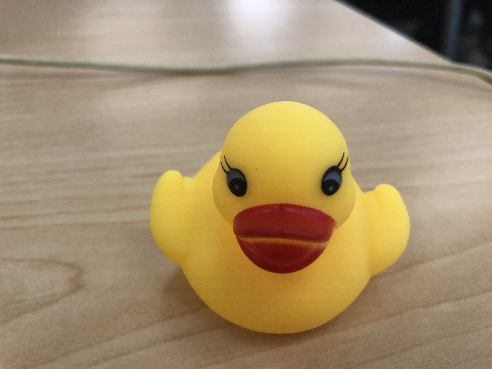

Gwendolyn Duck has been working with developers since January 13, 2020. She is an accomplished code de-bugger, conversant in html, css, and javascript issues. Gwendolyn is well known as a collaborative team player. She has worked with such noteable colleagues as Harold the baloon dog and developer Octocat. (See Portfolio for more on this collaborative work).
In addition to her coding achievements, Gwendolyn is a world class competative bathtub swimmer, having set records for fastest time from one end of the bath to the other in bubbly conditions in the lightweight rubber duck division.